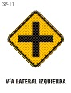
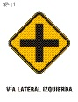

Señales Preventivas
Las señales PREVENTIVAS tienen como finalidad advertir al usuario de la via la existencia de algun peligro y/o situaciones imprevistas de caracter permanente o temporal, indicandole su naturaleza. Son de color amarillo.


 
